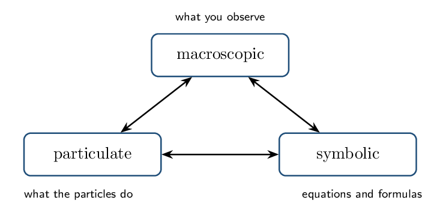

Physical and Chemical Change Fri Oct 9
- Distinguish physical from chemical change at the particle level.
- Evaluate observational evidence for a chemical reaction critically.
Read: Zumdahl §1.10 • PDF pp. 53–57
Read: §3.8 • PDF pp. 132–134
- Melting ice breaks what kind of force? hydrogen bonds (IMFs)
- Balance: \(\ce{Na + Cl2 -> NaCl}\): \(\ce{2 Na + Cl2 -> 2 NaCl}\)
- Moles in 18.0 g \(\ce{H2O}\): 1.00 mol
INSTRUCTION A • What actually changed? 25 min
The particle-level test CED 4.4
SP 1The distinction is not about how dramatic the change looks. It is about whether the substances themselves changed identity:
| Physical change | Chemical change | |
|---|---|---|
| What changes | arrangement or spacing of particles | which atoms are bonded |
| Bonds | intermolecular forces broken/formed | covalent or ionic bonds broken/formed |
| Identity | unchanged | new substances exist |
| Example | \(\ce{H2O(l) -> H2O(g)}\) | \(\ce{2 H2O -> 2 H2 + O2}\) |
Dissolving is the classic hard case. Dissolving sugar is physical — \(\ce{C12H22O11}\) molecules simply disperse. Dissolving \(\ce{NaCl}\) is treated as physical too, though ionic bonds are disrupted, because no new substance forms and the process reverses on evaporation. But dissolving \(\ce{HCl}\) gas in water is chemical — it ionizes to \(\ce{H+}\) and \(\ce{Cl-}\), species that did not exist before.
GUIDED PRACTICE • Classify with justification 15 min
- Iron rusting: chemical — new compound \(\ce{Fe2O3}\)
- Dry ice subliming: physical — still \(\ce{CO2}\)
- Magnesium burning: chemical — forms \(\ce{MgO}\)
- Salt dissolving: physical — ions dispersed, reversible
INSTRUCTION B • Evidence — and its limits 20 min
Reading experimental evidence CED 4.1
SP 2 Common indicators that a chemical reaction has occurred:- formation of a precipitate
- evolution of a gas
- a temperature change (energy released or absorbed)
- a persistent colour change
Every one of these can mislead. Bubbles may be dissolved air escaping on warming. A colour change may be dilution or an indicator responding to pH rather than a new substance. A temperature change accompanies dissolving too. Good evidence is a combination, plus a plausible product. AP rewards students who name the ambiguity.
APPLICATION • Evaluate the claim 20 min
- A student adds a colourless solution to another colourless solution and the mixture turns faintly yellow. They claim a reaction occurred. Give one reason this may be right and one reason it may not be.
- Heating a sealed flask of water produces vigorous bubbling. Is this chemical? Justify.
Give one observation that would be strong evidence of a chemical change and explain why it is hard to explain physically.
Representations of Reactions Mon Oct 12
- Translate among symbolic, particulate, and macroscopic representations.
- Draw particulate diagrams that conserve atoms and charge.
Read: Zumdahl §4.6–4.7 • PDF pp. 188–192
- Physical or chemical: sugar dissolving? physical
- Evidence of reaction that gases can fake: bubbling
- Balance: \(\ce{H2 + O2 -> H2O}\): \(\ce{2 H2 + O2 -> 2 H2O}\)
- \([\ce{Cl-}]\) in 0.20 M \(\ce{MgCl2}\): 0.40 M
INSTRUCTION A • Three levels of description 25 min
The AP triangle CED 4.3
SP 1Every chemical idea can be described at three levels, and AP asks you to move fluently among them:

Rules for a correct particulate diagram
- Conserve atoms — count each type on both sides.
- Conserve charge — total charge before equals total charge after.
- Show ionic compounds in solution as separated ions.
- Show the correct ratio of particles.
- Leftover excess reactant stays in the picture — do not quietly delete it.
A box before reaction shows 6 filled circles (\(\ce{A}\)) and 2 open pairs (\(\ce{B2}\)). After reaction it shows 4 \(\ce{AB}\) units and 2 leftover filled circles.
Atom check: before, 6 A and 4 B; after, \(4 + 2 = 6\) A and 4 B. ✓
Equation: \(\ce{2 A + B2 -> 2 AB}\).
Limiting reactant: \(\ce{B2}\) — it is entirely consumed while 2 A remain.
GUIDED PRACTICE • Symbolic to particulate 15 min
Draw the particulate picture of 0.1 M \(\ce{Na2SO4}\) reacting with 0.1 M \(\ce{BaCl2}\), showing 3 formula units of each.INSTRUCTION B • Common drawing errors 20 min
What graders look for CED 4.3
SP 1- Drawing \(\ce{NaCl}\) as bonded pairs in solution instead of free ions.
- Losing or inventing atoms between the before and after boxes.
- Omitting the excess reactant from the “after” picture.
- Drawing a precipitate as scattered ions rather than a clustered solid.
APPLICATION • Diagnose and redraw 20 min
- A student's “after” box for \(\ce{Zn + 2 HCl -> ZnCl2 + H2}\) shows \(\ce{ZnCl2}\) as one bonded unit floating in solution, and no \(\ce{H2}\). Name both errors.
- Explain why a particulate diagram of a precipitation reaction should show the solid as a cluster rather than dispersed particles.
Why must charge as well as atoms be conserved in a particulate drawing of an ionic reaction?
Net Ionic Equations Wed Oct 14
- Write formula, complete ionic, and net ionic equations.
- Justify which species are written as ions.
Read: Zumdahl §4.6 • PDF pp. 188–190
- Conserve what two things in a particulate drawing? atoms and charge
- Is \(\ce{AgCl}\) soluble? no
- Strong or weak electrolyte: \(\ce{HC2H3O2}\)? weak
INSTRUCTION A • The splitting rule 25 min
What gets written as ions CED 4.2
SP 1- Split: soluble ionic compounds, strong acids, strong bases — all strong electrolytes.
- Keep whole: solids \(\ce{(s)}\), liquids \(\ce{(l)}\), gases \(\ce{(g)}\), weak electrolytes, nonelectrolytes.
Ions unchanged on both sides are spectator ions and are cancelled.
Complete ionic: \(\ce{Pb^2+(aq) + 2 NO3^-(aq) + 2 K+(aq) + 2 I^-(aq) -> PbI2(s) + 2 K+(aq) + 2 NO3^-(aq)}\)
Spectators: \(\ce{K+}\), \(\ce{NO3-}\)
Net ionic: \(\ce{Pb^2+(aq) + 2 I^-(aq) -> PbI2(s)}\)
GUIDED PRACTICE • Write the net ionic 15 min
- \(\ce{AgNO3(aq) + NaBr(aq)}\): \(\ce{Ag+ + Br^- -> AgBr(s)}\)
- \(\ce{HCl(aq) + KOH(aq)}\): \(\ce{H+ + OH^- -> H2O(l)}\)
- \(\ce{K2CO3(aq) + CaCl2(aq)}\): \(\ce{Ca^2+ + CO3^2- -> CaCO3(s)}\)
INSTRUCTION B • Why it matters 20 min
One equation, many disguises CED 4.2
SP 6Because spectators vanish, the net ionic equation reveals that many different-looking reactions are chemically identical. \(\ce{AgNO3}\) with \(\ce{NaCl}\), with \(\ce{KCl}\), or with \(\ce{NH4Cl}\) all reduce to \(\ce{Ag+ + Cl^- -> AgCl(s)}\).
Never split water, and never split a weak acid or weak base. \(\ce{HF}\), \(\ce{HC2H3O2}\), and \(\ce{NH3}\) all appear as whole molecules — they are barely ionized, so the molecular form is what is actually present.
APPLICATION • Harder cases 20 min
- Write the net ionic equation for \(\ce{HF(aq)}\) with \(\ce{NaOH(aq)}\) and explain how it differs from the \(\ce{HCl}\) case.
- \(\ce{Ba(OH)2(aq)}\) reacts with \(\ce{H2SO4(aq)}\). Explain why this reaction has no spectator ions.
Mixing \(\ce{NaNO3(aq)}\) and \(\ce{KCl(aq)}\) produces no net ionic equation. What does that tell you physically?
Types of Reactions and Precipitation Fri Oct 16
- Classify reactions by type and predict products.
- Use solubility rules to predict precipitates.
Read: Zumdahl §4.4–4.5 • PDF pp. 182–188
- Net ionic for \(\ce{AgNO3 + NaCl}\): \(\ce{Ag+ + Cl^- -> AgCl(s)}\)
- Do you split \(\ce{NH3}\) in an ionic equation? no
- Soluble? \(\ce{BaSO4}\) no
INSTRUCTION A • The three AP reaction types 25 min
Classification CED 4.7
SP 1The CED organizes reactions into three families you must recognize on sight:
| Type | Signature | Net ionic pattern |
|---|---|---|
| Precipitation | two soluble salts mixed; an insoluble product forms | cation \(+\) anion \(\to\) solid |
| Acid–base | proton transfer | \(\ce{H+ + OH^- -> H2O}\) (strong/strong) |
| Redox | oxidation states change | electron transfer between species |
Solubility rules — the working set
- Always soluble: \(\ce{NO3-}\), alkali metals, \(\ce{NH4+}\)
- Usually soluble: \(\ce{Cl-}\), \(\ce{Br-}\), \(\ce{I-}\) except with \(\ce{Ag+}\), \(\ce{Pb^2+}\); \(\ce{SO4^2-}\) except with \(\ce{Ba^2+}\), \(\ce{Pb^2+}\), \(\ce{Ca^2+}\)
- Usually insoluble: \(\ce{CO3^2-}\), \(\ce{PO4^3-}\), \(\ce{S^2-}\), \(\ce{OH-}\) — unless paired with the always-soluble cations
GUIDED PRACTICE • Predict and classify 15 min
- \(\ce{Ba(NO3)2(aq) + K2SO4(aq)}\): precipitation — \(\ce{BaSO4(s)}\)
- \(\ce{HNO3(aq) + NaOH(aq)}\): acid–base — water forms
- \(\ce{Mg(s) + 2 HCl(aq)}\): redox — Mg oxidized, H reduced
INSTRUCTION B • Predicting products by ion interchange 20 min
The procedure CED 4.7
SP 4- List the ions present after mixing.
- Swap partners: pair each cation with the other's anion.
- Balance the charges to get correct formulas.
- Apply the solubility rules; the insoluble one is the precipitate.
“No reaction” is a legitimate answer. If both possible products are soluble, nothing happens — the beaker just contains four kinds of ion. Being willing to write that is part of the skill.
APPLICATION • Full prediction 20 min
- Predict the products of \(\ce{Pb(NO3)2(aq) + Na2CO3(aq)}\), write the balanced formula and net ionic equations, and name the precipitate.
- A student mixes \(\ce{KNO3(aq)}\) and \(\ce{NaCl(aq)}\) and reports a precipitate. What most likely happened?
Which is the precipitate when \(\ce{CaCl2(aq)}\) meets \(\ce{Na3PO4(aq)}\), and what rule decides it?
Acid–Base Reactions Mon Oct 19
- Apply Arrhenius and Bronsted–Lowry definitions.
- Write net ionic equations for strong and weak acid neutralizations.
Read: Zumdahl §4.8 • PDF pp. 192–199
- Precipitate from \(\ce{Pb^2+}\) and \(\ce{I-}\): \(\ce{PbI2}\)
- Reaction type for \(\ce{Zn + CuSO4}\): redox
- Always-soluble anion: nitrate
- Moles in 25.0 mL of 0.200 M: 5.00e-3 mol
INSTRUCTION A • Two definitions 25 min
Arrhenius and Bronsted–Lowry CED 4.8
SP 1- Arrhenius: acid produces \(\ce{H+}\); base produces \(\ce{OH-}\).
- Bronsted–Lowry: acid is a proton donor; base is a proton acceptor — broad enough to cover \(\ce{NH3}\).
The six strong acids: \(\ce{HCl}\), \(\ce{HBr}\), \(\ce{HI}\), \(\ce{HNO3}\), \(\ce{H2SO4}\), \(\ce{HClO4}\). Strong bases: group 1 hydroxides plus \(\ce{Ca(OH)2}\), \(\ce{Sr(OH)2}\), \(\ce{Ba(OH)2}\). Everything else is weak.
GUIDED PRACTICE • Strong or weak 15 min
- \(\ce{H2SO4}\): strong acid
- \(\ce{HF}\): weak acid
- \(\ce{NH3}\): weak base
- \(\ce{Ba(OH)2}\): strong base
INSTRUCTION B • Neutralization net ionic equations 20 min
Two cases CED 4.8
SP 6APPLICATION • Reasoning about neutralization 20 min
- Equal volumes of 0.10 M \(\ce{HCl}\) and 0.10 M \(\ce{HC2H3O2}\) are each titrated with 0.10 M \(\ce{NaOH}\). Do they require the same volume of base? Explain.
- Why does the \(\ce{HC2H3O2}\) solution have a much higher pH before titration begins?
Write the net ionic equation for \(\ce{HCl(aq)}\) reacting with \(\ce{NH3(aq)}\).
Oxidation–Reduction Wed Oct 21
- Assign oxidation states and identify redox reactions.
- Name the oxidizing and reducing agents correctly.
Read: Zumdahl §4.9–4.10 • PDF pp. 199–210
- Net ionic, strong acid + strong base: \(\ce{H+ + OH^- -> H2O}\)
- Weak acid in a net ionic is written how? intact
- Oxidation state of O (usual): \(-2\)
INSTRUCTION A • Oxidation states 25 min
The rules CED 4.9
SP 5- Free element: 0
- Monatomic ion: its charge
- Oxygen: \(-2\) (peroxides \(-1\))
- Hydrogen: \(+1\) (metal hydrides \(-1\))
- Fluorine: \(-1\)
- Sum \(=\) 0 for a compound, or the ion charge
\(\ce{MnO4-}\): four oxygens give \(-8\); ion is \(1-\); Mn is \(+7\).
GUIDED PRACTICE • Assign 15 min
- N in \(\ce{NO3-}\): \(+5\)
- S in \(\ce{SO4^2-}\): \(+6\)
- C in \(\ce{CO2}\): \(+4\)
- Cl in \(\ce{ClO4-}\): \(+7\)
INSTRUCTION B • Agents 20 min
Who lost, who gained CED 4.9
SP 6| Oxidation | Reduction | |
|---|---|---|
| Electrons | lost | gained |
| Oxidation state | increases | decreases |
| That species is the | reducing agent | oxidizing agent |
The labels are backwards from intuition: the species oxidized is the reducing agent. Read it as “the thing that causes reduction in something else.” OIL RIG: Oxidation Is Loss, Reduction Is Gain.
APPLICATION • Full redox analysis 20 min
- For \(\ce{Fe2O3(s) + 3 CO(g) -> 2 Fe(s) + 3 CO2(g)}\), identify all oxidation state changes and both agents.
- Explain how you can tell at a glance that \(\ce{2 Na + Cl2 -> 2 NaCl}\) is redox.
In \(\ce{Zn(s) + Cu^2+(aq) -> Zn^2+(aq) + Cu(s)}\), name the oxidizing agent and justify with oxidation states.
Stoichiometry and Titration Fri Oct 23
- Carry out solution stoichiometry, including limiting reactant.
- Analyze titration data and curves.
Read: Zumdahl §3.9–3.11 • PDF pp. 134–153
Read: §4.11 • PDF pp. 210–212
- Oxidizing agent in \(\ce{2 Mg + O2 -> 2 MgO}\): \(\ce{O2}\)
- Moles in 40.0 mL of 0.250 M: 0.0100 mol
- Theoretical yield comes from which reactant? the limiting one
INSTRUCTION A • Solution stoichiometry 25 min
Volume and molarity to moles CED 4.5
SP 5The only new step versus ordinary stoichiometry: convert volume \(\times\) molarity into moles at the start, and back to volume or mass at the end.
50.0 mL of 0.200 M \(\ce{Pb(NO3)2}\) is mixed with 50.0 mL of 0.300 M \(\ce{KI}\). \begin{align*} n(\ce{Pb^2+}) &= (0.0500)(0.200) = 0.0100\,\mathrm{mol}\\ n(\ce{I-}) &= (0.0500)(0.300) = 0.0150\,\mathrm{mol}\\ &\ce{Pb^2+ + 2 I^- -> PbI2(s)} \end{align*} \(\ce{Pb^2+}\) could make 0.0100 mol of solid; \(\ce{I-}\) could make \(0.0150/2 = 0.00750\) mol. Iodide is limiting. Mass \(= 0.00750 \times 461.0 = 3.46\,\mathrm{g}\).
GUIDED PRACTICE • Solution stoichiometry drill 15 min
- Moles of \(\ce{Ag+}\) in 30.0 mL of 0.150 M \(\ce{AgNO3}\): 4.50e-3 mol
- Mass of \(\ce{AgCl}\) (\(M = 143.32\)) if all of it precipitates: 0.645 g
INSTRUCTION B • Titration 20 min
Finding an unknown concentration CED 4.6
SP 4At the equivalence point, moles of titrant added exactly satisfy the reaction stoichiometry. The endpoint is where the indicator changes — chosen to fall as close to the equivalence point as possible.
25.0 mL of \(\ce{H2SO4}\) needs 40.0 mL of 0.200 M \(\ce{NaOH}\). \begin{align*} n(\ce{OH-}) &= (0.0400)(0.200) = 8.00e-3\,\mathrm{mol}\\ n(\ce{H2SO4}) &= \tfrac12(8.00\times10^{-3}) = 4.00e-3\,\mathrm{mol}\\ [\ce{H2SO4}] &= \frac{4.00\times10^{-3}}{0.0250} = 0.160\,\mathrm{M} \end{align*} The factor of \(\tfrac12\) is because \(\ce{H2SO4}\) is diprotic.
The most common titration error in this unit is using a 1:1 ratio for a diprotic acid, which halves the reported concentration. Always write the balanced neutralization equation before dividing.
APPLICATION • Titration analysis 20 min
- 20.0 mL of \(\ce{NaOH}\) requires
18.5 mL of 0.150 M \(\ce{HCl}\). Find
\([\ce{NaOH}]\).
\(n(\ce{H+}) = (0.0185)(0.150) = 2.78e-3\,\mathrm{mol}\); 1:1 \(\to [\ce{NaOH}] = 2.78\times10^{-3}/0.0200 = 0.139\,\mathrm{M}\)
- A student overshoots the endpoint by several drops. Does the reported acid concentration come out too high or too low? Explain.
Why must the balanced equation be written before doing titration arithmetic?